1HK016Planejado · 21/10HOOKAdaptar a dor
HK016 na frente do nosso corpo #5 (M02 Dieta)
5 corpo(s) · 8 arquivo(s) · dup 6 · 70 dias · corte 2.75 s
o gancho da Akka com a dor trocada; o corpo é o nosso que mais vendeu no funil curto
O que modelar, do mais forte para o mais fraco, com o tipo de cada item: HOOK (encaixar na frente de um corpo nosso), CORPO (modelar o corpo e testar ganchos na frente) ou CRIATIVO INTEIRO (gancho e corpo valem juntos). No topo, o que o Phillip já decidiu e o que já usamos sem validar.
O fim de cada gancho é o trecho que o anunciante troca entre variações do mesmo corpo, medido com arma/processos/scripts/comparar-variacoes.py e auditar-acervo.py. Sem variação para comparar, o corte fica NÃO CONFIRMADO. O que já usamos em teste aparece no topo, em vermelho.
HK016 na frente do nosso corpo #5 (M02 Dieta)
5 corpo(s) · 8 arquivo(s) · dup 6 · 70 dias · corte 2.75 s
o gancho da Akka com a dor trocada; o corpo é o nosso que mais vendeu no funil curto
HK002 na frente do nosso corpo #4 (M10 Shot)
1 corpo(s) · 2 arquivo(s) · dup 50 · 30 dias · corte 2.22 s
lista de ingredientes combina com a bebida do Shot


Akka corpo 1, inteiro: é o criativo próprio do /qt (Truque do Cravo)
11 abertura(s) · 15 arquivos · dup 10 · 45 dias · Akka Superbiotics
plano pronto em arma/analises/akka-corpo-modelagem-2026-10-21/PLANO.md. Atriz de ~40 anos no quarto, com toalha na cabeça, na mesma posição da original. Vídeos da internet antes de produzir; o que não achar, o Phillip manda o link do YouTube. Vídeo no HeyGen, voz no ElevenLabs v4


Receita caseira para a glicose
14 abertura(s) · 21 arquivos · dup 50 · 45 dias · Angelica Top Saude
Já usado em teste e não validado (0 vendas; a régua é 4). M18: 3 leads, 0 vendas; M19: 7 leads, 0 vendas (tráfego até 22/10; gasto ainda não informado pelo Léo)


Gordura no fígado e o médico que não deu cardápio
3 abertura(s) · 17 arquivos · dup 27 · 131 dias · +140 Receitas
Já usado em teste e não validado (0 vendas; a régua é 4). M15: 6 leads, 0 vendas; M16: 3 leads, 0 vendas; M17: 1 leads, 0 vendas (tráfego até 22/10; gasto ainda não informado pelo Léo)


O frasco que fala: "é isso que acontece quando alguém me toma"
3 abertura(s) · 8 arquivos · dup 360 · 60 dias · Reviva
Já usado em teste e não validado (0 vendas; a régua é 4). M20: 7 leads, 0 vendas (tráfego até 22/10; gasto ainda não informado pelo Léo)
Gente, eu eliminei toda a minha gordura do fígado Só com o chá que a Nutri me passou
2 corpo(s) · 11 arquivo(s) · dup 17 · 126 dias · corte 4.18 s
Já usado em teste e não validado (0 vendas; a régua é 4). M16-B: 0 leads, 0 vendas; M15-B: 3 leads, 0 vendas; M17-B: 0 leads, 0 vendas (tráfego até 22/10; gasto ainda não informado pelo Léo)
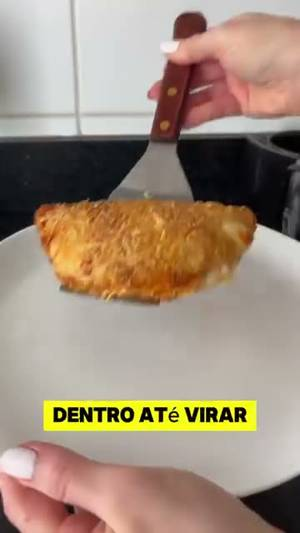
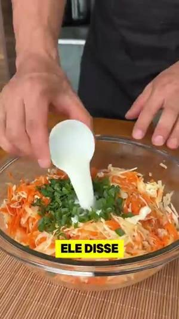
A gordura no fígado não dói, não avisa, vai destruindo por dentro, até virar cirrose. Eu descobri por acaso, num exame de rotina, esteatose hepática grau 2. Levei um susto, perguntei para o médico, o que eu faço? Ele disse, muda a alimentação, emagrece. Só isso, nenhuma orientação, nenhum cardápio, nada. Fui para o Google, um site falava uma coisa, outro falava diferente. Fiquei com medo de comer qualquer coisa, até que encontrei as receitas da NutriPatrícia, feitas especialmente para quem tem gordura no fígado.
1 corpo(s) · 7 arquivo(s) · dup 27 · 131 dias · corte 29.60 s
Já usado em teste e não validado (0 vendas; a régua é 4). M15-A: 2 leads, 0 vendas; M16-A: 0 leads, 0 vendas; M17-A: 1 leads, 0 vendas (tráfego até 22/10; gasto ainda não informado pelo Léo)
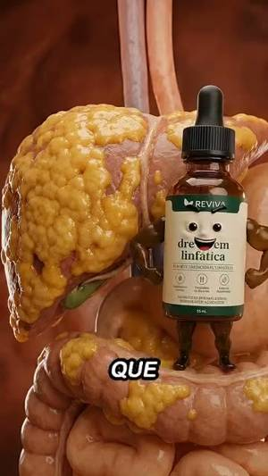
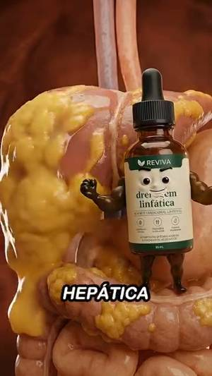
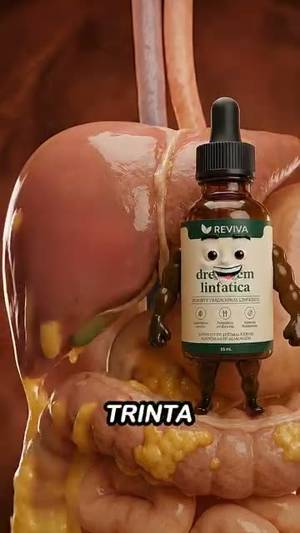
É isso que acontece quando alguém com doença hepática crônica me toma por 30 dias.
1 corpo(s) · 4 arquivo(s) · dup 20 · 52 dias · corte 4.62 s
Já usado em teste e não validado (0 vendas; a régua é 4). M20-A: 4 leads, 0 vendas (tráfego até 22/10; gasto ainda não informado pelo Léo)
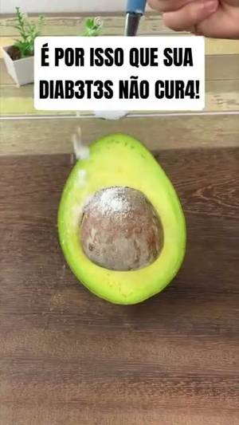
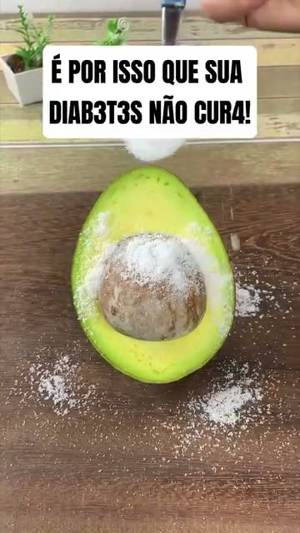
As pessoas usam errado o abacate para curar a diabetes.
1 corpo(s) · 2 arquivo(s) · dup 40 · 24 dias · corte 3.18 s
Já usado em teste e não validado (0 vendas; a régua é 4). M18-A: 1 leads, 0 vendas; M19-A: 3 leads, 0 vendas (tráfego até 22/10; gasto ainda não informado pelo Léo)
Tome isso à noite e a gordura teimosa do fígado vai desaparecer. Vai secar sua pochete e acabar com o seu estômago alto. Gente, presta atenção. Esse chá, ele é indicado pra quem tá com gordura no fígado. O que eu não sabia é que ele também emagrecia. E em menos de duas semanas, eu já perdi 5 quilos. Essa receita foi a Nutri Júlia que passou. Eu tomei todo dia, tá? Foi surreal o meu resultado. Secou muito a minha barriga. Aquele cansaço, aquele estufamento, tá? Sem fazer nenhuma atividade física. Só tomando esse chá.
1 corpo(s) · 2 arquivo(s) · dup 15 · 43 dias · corte 34.12 s
Já usado em teste e não validado (0 vendas; a régua é 4). M17-C: 0 leads, 0 vendas; M15-C: 1 leads, 0 vendas; M16-C: 3 leads, 0 vendas (tráfego até 22/10; gasto ainda não informado pelo Léo)
Não tome muito porque abaixa muito a glicose, açafrão, abacate e limão.
1 corpo(s) · 2 arquivo(s) · dup 11 · 45 dias · corte 4.68 s
Já usado em teste e não validado (0 vendas; a régua é 4). M10-S3: 0 leads, 0 vendas (tráfego até 22/10; gasto ainda não informado pelo Léo)
Se você tem vinagre de maçã e um abacate na sua cozinha, é tudo o que você precisa pra curar sua diabetes.
1 corpo(s) · 2 arquivo(s) · dup 9 · 14 dias · corte 5.96 s
Já usado em teste e não validado (0 vendas; a régua é 4). M10-S2: 3 leads, 0 vendas (tráfego até 22/10; gasto ainda não informado pelo Léo)
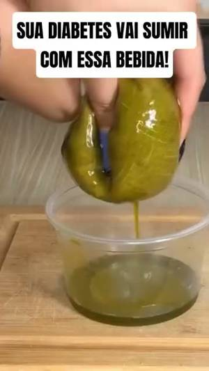
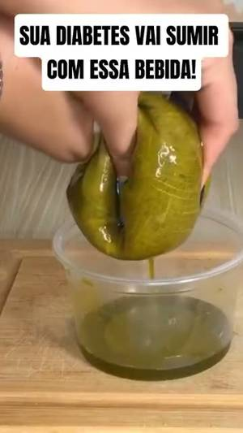
Beba essa mistura estranha por 14 dias e veja sua diabetes sumir.
1 corpo(s) · 1 arquivo(s) · dup 41 · 30 dias · corte 4.46 s
Já usado em teste e não validado (0 vendas; a régua é 4). M10-S1: 3 leads, 0 vendas (tráfego até 22/10; gasto ainda não informado pelo Léo)
Faça esse glifage natural, se quiser curar a diabetes.
1 corpo(s) · 1 arquivo(s) · dup 26 · 24 dias · corte 2.88 s
Já usado em teste e não validado (0 vendas; a régua é 4). M19-B: 2 leads, 0 vendas; M18-B: 2 leads, 0 vendas (tráfego até 22/10; gasto ainda não informado pelo Léo)
Se você tem mais de 50 anos e sofre com diabetes, você só precisa desses 3 ingredientes pra eliminar a diabetes.
1 corpo(s) · 1 arquivo(s) · dup 25 · 44 dias · corte 6.32 s
Já usado em teste e não validado (0 vendas; a régua é 4). M18-C: 0 leads, 0 vendas; M19-C: 2 leads, 0 vendas (tráfego até 22/10; gasto ainda não informado pelo Léo)
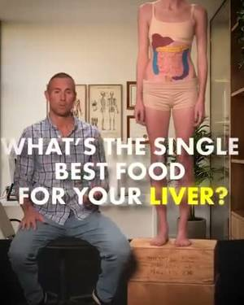
Qual é o melhor alimento para o seu fígado? Veja isso.
1 corpo(s) · 1 arquivo(s) · dup 8 · 39 dias · corte 2.66 s
Já usado em teste e não validado (1 venda; a régua é 4). M02-D3: 4 leads, 1 vendas (anúncio #30: R$ 60,09 · CTR 6,95% · hook rate 57% · 1 checkout · 1 venda (pixel)) (tráfego até 22/10)
Coma menos, mexa-se mais. Se o seu médico já te disse isso, ele tem tratado o seu ganho de peso ao contrário.
1 corpo(s) · 1 arquivo(s) · dup 7 · 17 dias · corte 3.22 s
Já usado em teste e não validado (0 vendas; a régua é 4). M02-D1: 2 leads, 0 vendas (anúncio #28: R$ 29,12 · CTR 3,00% · hook rate 50% · 2 checkouts · 0 vendas) (tráfego até 22/10)
Metformina, Ozempic, Lipitor. Se você reconhece algum desses nomes, o seu médico tem tratado o seu ganho de peso ao contrário.
1 corpo(s) · 1 arquivo(s) · dup 6 · 21 dias · corte 4.54 s
Já usado em teste e não validado (0 vendas; a régua é 4). M02-D2: 2 leads, 0 vendas (anúncio #29: R$ 35,60 · CTR 3,33% · hook rate 42,5% · 2 checkouts · 0 vendas) (tráfego até 22/10)


"Um órgão faz a barriga da mulher estufar"
3 abertura(s) · 3 arquivos · dup 7 · 77 dias · Akka Superbiotics
corpo com várias aberturas: modelar o corpo e testar ganchos na frente


O colesterol e o médico que culpa você
3 abertura(s) · 3 arquivos · dup 7 · 18 dias · Akka Superbiotics
corpo com várias aberturas: modelar o corpo e testar ganchos na frente
Olha esses dois exames do fígado.
2 corpo(s) · 3 arquivo(s) · dup 7 · 26 dias · corte 1.74 s
encaixar na frente de um corpo nosso
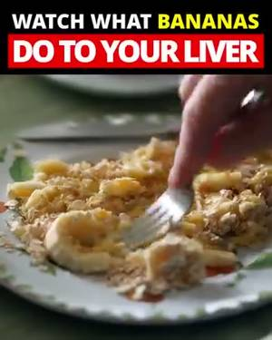
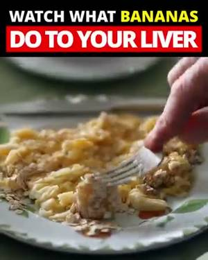
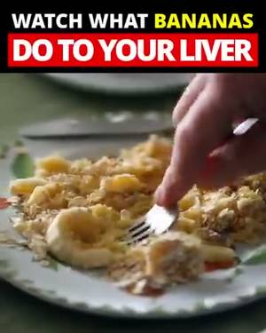
Veja o que a banana faz com o seu fígado.
2 corpo(s) · 2 arquivo(s) · dup 7 · 153 dias · corte 2.75 s
encaixar na frente de um corpo nosso
95% das mulheres não sabem o jeito certo de drenar o sistema linfático.
1 corpo(s) · 3 arquivo(s) · dup 4 · 77 dias · corte 6.22 s
encaixar na frente de um corpo nosso


"Os três primeiros dias tomando isso são meio nojentos"
1 abertura(s) · 2 arquivos · dup 21 · 32 dias · Ana Paula Achadinhos
a mesma abertura re-subida com duplicação alta: gancho e corpo valem juntos
Cansou de tomar glifage todo dia e a glicose continuar alta? Abacate e vinagre de maçã podem mudar isso.
1 corpo(s) · 2 arquivo(s) · dup 20 · 14 dias · corte 6.50 s
encaixar na frente de um corpo nosso


O shake em jejum ("já perdi 5 quilos")
1 abertura(s) · 2 arquivos · dup 14 · 94 dias · +140 Receitas
a mesma abertura re-subida com duplicação alta: gancho e corpo valem juntos
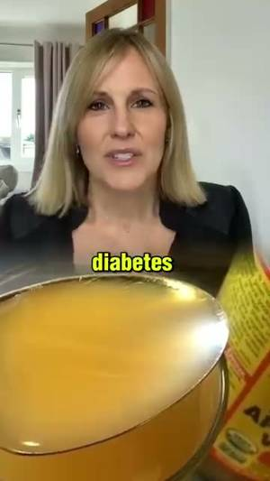
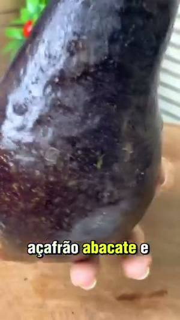
Para curar a diabetes, você só precisa de uma colher de vinagre de maçã e mais três ingredientes, açafrão, abacate e limão.
1 corpo(s) · 2 arquivo(s) · dup 11 · 30 dias · corte 6.94 s
encaixar na frente de um corpo nosso
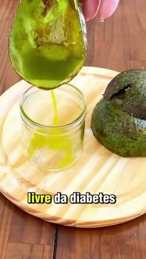
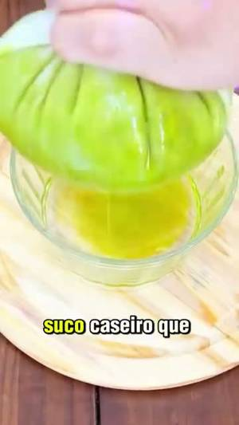
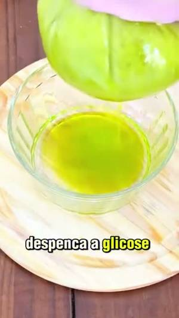
Quer se ver livre da diabetes tipo 2? Faça este suco caseiro que despenca a glicose para menos de 100.
1 corpo(s) · 1 arquivo(s) · dup 24 · 30 dias · corte 5.58 s
encaixar na frente de um corpo nosso
Se você sofre com boca seca, formigamento e visão turva, você precisa disso se quiser acabar com a diabetes.
1 corpo(s) · 1 arquivo(s) · dup 24 · 24 dias · corte 6.06 s
encaixar na frente de um corpo nosso
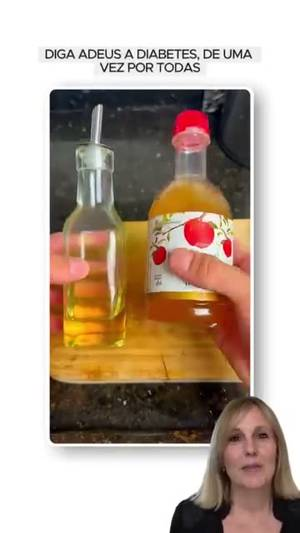
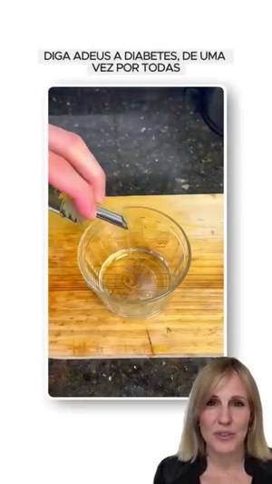
A indústria não quer que você saiba isso. Mas você pode curar a diabetes tipo 2 usando vinagre de maçã e um abacate. Não tome muito porque abaixa muito a glicose.
1 corpo(s) · 1 arquivo(s) · dup 19 · 14 dias · corte 9.18 s
encaixar na frente de um corpo nosso
Os melhores alimentos para reverter a gordura no fígado e acelerar o emagrecimento? Veja isso.
1 corpo(s) · 1 arquivo(s) · dup 10 · 21 dias · corte 3.64 s
encaixar na frente de um corpo nosso